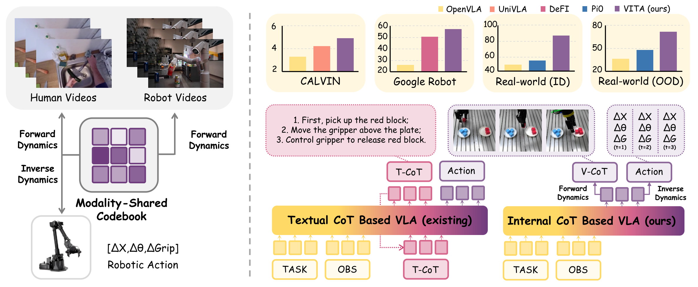
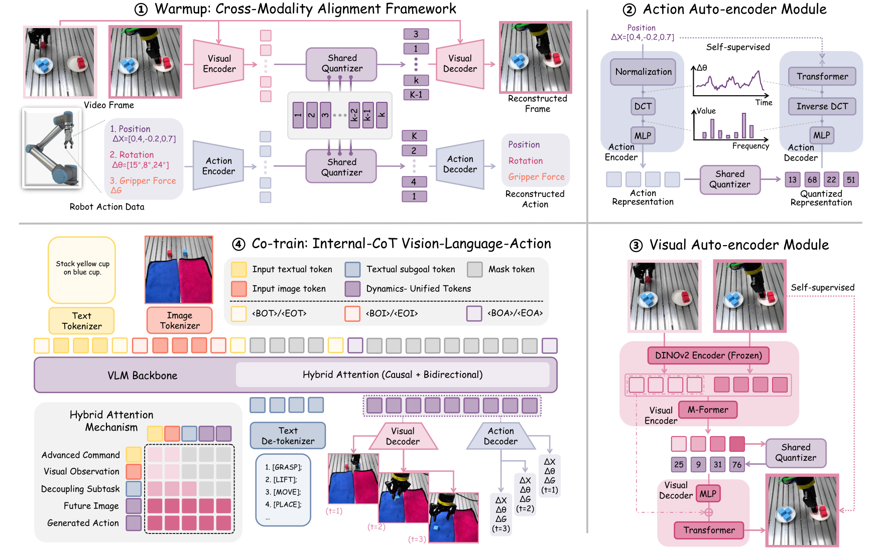

Align
Visual and action autoencoders learn with a shared discrete codebook, connecting what changes in an image with how a robot moves.
Modality-shared codebook
A Hybrid-Modality Pipeline with Implicit Visual Chain-of-Thought
for Robotic Action Generation
01 / THE IDEA
Video and action describe the same change in the world. VITA brings them into a shared discrete latent space, so visual prediction can guide action generation.

Vision-Language-Action (VLA) models built upon Chain-of-Thought (CoT) have achieved remarkable success in advancing general-purpose robotic agents, owing to its significant perceptual comprehension. Recently, since text-only CoT struggles to adequately capture scene details in complex spatial environments, a highly promising strategy involves leveraging visual priors to guide robotic action generation. Nevertheless, these strategies face two inherent challenges: (i) a modality gap between visual observations and low-level actions, and (ii) unstable training due to competing objectives between visual prediction and action generation. To address these challenges, we propose a Vision-Integrated Trajectory Alignment (VITA) framework that learns a shared discrete latent space for vision and action, enabling joint modeling of perception and motor control. VITA introduces an implicit visual CoT: autoregressively generated tokens are simultaneously decoded into future-frame predictions and robot actions, thereby internalizing visual dynamics as an inductive bias for motion planning. Extensive experiments on simulated and real-world environments demonstrate state-of-the-art performance.
02 / THE METHOD
Learn a common motion vocabulary. Generate an internal visual chain of thought. Decode the same latent stream into future frames and robot actions.
Visual and action autoencoders learn with a shared discrete codebook, connecting what changes in an image with how a robot moves.
Modality-shared codebookA vision-language policy predicts motion tokens from the instruction and current observation. Visual reconstruction supplies a training signal.
Internal visual CoTThe action decoder turns the generated tokens into controls. In the internal-CoT path, action inference does not reconstruct future images.
Action-only deployment
03 / SEE IT IN MOTION
Browse the original real-world and simulation demonstrations. Select a task family, preview its clips, then press play.
These are research demonstration videos, not rollouts produced by the public reference implementation or an aggregate success-rate estimate.
36 CLIPS / 8 TASK GROUPS
Place the blocks on the towel of the same color.
Press play to load the selected video. No autoplay.
Open original video Link to this clip04 / OPEN SOURCE
A transparent LIBERO-only implementation, from split-aware data to staged training and simulator evaluation.
No datasets, foundation weights or trained checkpoints are included. The compact default model is not the paper-scale pretrained policy.
Shared visual / action representation
Effective batch 1,024
Policy and decoder learning
Effective batch 1,024
Action-decoder-only updates
Effective batch 192
Table 11 and Section 7.3 of the paper. All stages here reuse LIBERO training episodes; matching budgets does not reproduce the paper's pretraining data or success rates.
Install, test locally, then choose a small LIBERO smoke run or the full training plan.
02 / TRAINData contracts, exact resume, checkpoint transfer and offline versus simulator evaluation.
03 / UNDERSTANDPaper settings, independent implementation choices and what validation establishes.
PREPARE YOUR EXPERIMENT
After installing the package, generate an explicit configuration. Nothing starts training here.
python -m vita.libero_recipe prepare \
--output runs/libero-smoke --smoke \
--microbatch 2 --episodes-per-task 1 --max-tasks 1Use a new output directory for each experiment. Continue with data, training and evaluation ↗
Test the implementation. Keep the evidence separate. CPU regression tests and source privacy checks run in CI. Synthetic tests are not benchmark performance.
05 / REFERENCE
If VITA informs your work, cite the paper. The public code is an independent reference implementation.
Read on arXiv ↗@misc{ma2025vita,
title = {Unifying Perception and Action: A Hybrid-Modality Pipeline
with Implicit Visual Chain-of-Thought for Robotic Action Generation},
author = {Xiangkai Ma and Lekai Xing and Han Zhang and Wenzhong Li and Sanglu Lu},
year = {2025},
eprint = {2511.19859},
archivePrefix = {arXiv},
url = {https://arxiv.org/abs/2511.19859}
}